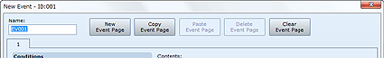
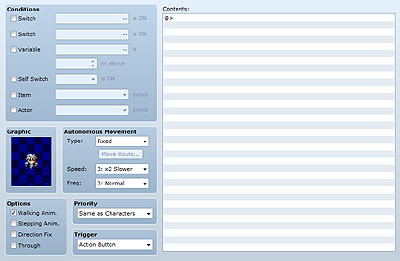

A unique number assigned to each event. These numbers are set automatically in the order you create events on each map. Example uses include employing them to specify events in variables.
The name of the event. This setting is only used by the editor and has no impact on game play. The default name "EV" followed by the event ID number will be entered automatically. Change as necessary to make the event content readily identifiable.
The numbers of the event pages included in events are displayed on each tab. You can edit the settings on each tab by clicking the respective tab.
The buttons along the top of the Create Event dialog box include those for creating and deleting event pages. The functions of each button are described below.
Creates a new event page with a number one greater than the event page you are currently editing. The page number of all subsequent event pages will be increased by one.
Copies to the clipboard the content of the event page you are currently editing.
Event pages in the clipboard will be added (inserted) using the next event page number after the page currently being edited. The page number of all subsequent event pages will be increased by one.
Deletes the event page you are currently editing. Each time you delete an event page, the numbers of the following pages are sequentially decremented by one.
Clears all the settings for the event page you are currently editing (returns it to its initial state).

The conditions under which the event will spawn based on the settings on the event page. Select the conditions you want to set to determine whether the event spawns. The available conditions are Switch, Variable, Self Switch, Item, and Actor.
Do not set any conditions if you want the event to spawn unconditionally. If you set multiple conditions, the event only spawns if all of them are satisfied.
If there are multiple event pages satisfying conditions, the event will spawn based on the event page with the highest number. The event will not spawn if none of the pages have their conditions satisfied.
The graphic displayed when the event spawns on the map. In the Graphic dialog box that appears when you double-click the field, specify the graphic you want by first clicking a selection in the file list (left side) and then an image (right side).
If you do not specify a graphic, the event will be spawned on the map without one. To clear a previously set graphic, select None at the very top of the file list in the Graphic dialog box.
Use the Type, Speed, and Freq settings to specify the movement method for map events. Speed defines the speed of movement, with higher values specifying faster speeds. Freq defines the movement cycle, with higher values specifying a faster frequency. Type allows you to specify one of the four following movement types:
Do not move.
Move around randomly.
Move toward the player's position.
Move along a specified route. Routes can be specified in the dialog box that appears when you click Move Route. See Setting Move Routes for more information.
Display options for graphics. Set the options you want to apply as necessary.
Displays an animation when moving. Use it to represent characters or animals that are moving.
Displays an animation when not moving. Use it for events where there is a wavy ocean surface or flames.
Makes it impossible to change a graphic's direction when moving.
Makes it possible to pass through a normally impassable terrain or event.
Specify one of the following choices for the positional relationship between the player and event. If the event and player can overlap, the display of the graphic that goes on top will be prioritized.
The player and others will be able to walk over this event. However, if a tile is selected in the Graphic settings, passage will conform to that tile's setting.
Positions the event at the same level as the player, preventing entry into the event's location.
The player and others will be able to walk under this event.
For events that spawn on maps, use one of the settings described below to specify when to start running the event commands entered in Contents.
Starts when the player presses the confirm button while next to the event and facing it in a certain direction (or when overlapping events that allow overlapping).
Starts when the player touches the map event (or overlaps an event that allows overlapping). The event also starts if the player presses the confirm button while in this state.
Starts when an event with Autonomous Movement bumps up against the player (or overlaps, in the case of events that allow overlapping). The event also starts if the player presses the confirm button while in this state.
Starts when the conditions have been satisfied and the event spawns on the map.
Starts when the conditions have been satisfied and the event spawns on the map, and cyclically repeats the process defined in Contents.
A list of commands to run when the specified trigger is satisfied. See the next item, "Editing Command Contents," for more information.
In the Contents box, edit the event commands you want to use to define the events to add to the game.
Event commands are processed in order, starting from the top of the list, and applied to game play. Rows in the list that have a diamond-shaped mark indicate event commands that have been added. Rows with a colon are those that display settings for event commands above, the position for branching processing, and so on.
To add an event command to the list, double-click a row displaying a diamond-shaped mark. In the dialog box that appears, select the event command to use and then define the desired processing (excluding some settings). Double-clicking a row for which you have already added an event command inserts a new one at that position.
Event commands that have already been added are displayed with a diamond-shaped mark next to them. Right-clicking such rows displays a shortcut menu where you can select such commands as Copy and Delete. The functions of each command are described below.
Inserts a new event command at the selected row.
Edits the settings for the selected event command.
Copies the event command on the selected row to the clipboard and deletes it from the list.
Copies the event command on selected row to the clipboard.
Inserts the event command copied to the clipboard at the selected row.
Deletes the event command on the currently selected row.
Selects the entire list for editing.
Selecting any row on the list by clicking it and then holding down the Shift key while clicking another row selects all the event commands between them (those with the diamond-shaped mark). Right-clicking the selected rows (those displayed in blue) opens a shortcut menu in which you can select commands that affect the entire range selected. With branch processing, however, only event commands within the same branch can be selected in this manner.